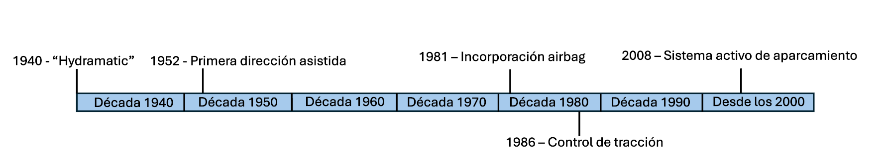

Sistemas Avanzados de Ayuda a la Conducción (ADAS)
Los ADAS son tecnologías que mejoran la seguridad y experiencia de conducción mediante sensores y sistemas avanzados. Este artículo explora su historia, funcionamiento y beneficios.
Historia y Regulación
Los ADAS nacieron en los años 1940 con la introducción de la transmisión automática "Hydramatic". A lo largo de las décadas, se han desarrollado tecnologías como el ABS, los sistemas de mantenimiento en el carril y más recientemente, regulaciones europeas que los hacen obligatorios en los vehículos nuevos.
Funcionamiento de los Sensores
Los ADAS utilizan diferentes tipos de sensores, como cámaras, radares, LiDAR y ultrasonidos, para detectar objetos, medir distancias y asistir al conductor en tiempo real. Estos sensores son fundamentales para sistemas como el frenado automático y el mantenimiento de carril.
- Cámaras: Detectan señales y objetos mediante reconocimiento de imagen.
- Radares: Utilizan ondas de radio para medir distancias y velocidades.
- LiDAR: Usa pulsos láser para crear mapas 3D del entorno.
- Ultrasonidos: Sensores de proximidad para aparcamiento.
Efectividad e Impacto
Los sistemas ADAS han demostrado reducir accidentes hasta en un 57% cuando están ampliamente implementados. Mejoran la seguridad de conductores, pasajeros y peatones al minimizar errores humanos.
Calibración y Mantenimiento
A pesar de su efectividad, los ADAS presentan desafíos en costos de reparación y calibración. La calibración precisa es crucial tras cualquier intervención para garantizar su correcto funcionamiento.
El Futuro de los ADAS
Los ADAS son un paso intermedio hacia la conducción autónoma. Con avances tecnológicos y mayor aceptación por parte del público, estas tecnologías están revolucionando la seguridad vial.
Conclusiones
Los ADAS son una tecnología clave para la seguridad vial y un puente hacia la conducción autónoma. A pesar de los desafíos de costo, sus beneficios en la reducción de siniestros los convierten en una inversión valiosa.